Meet the brain’s water & hormone control room.
Follow the exact slide numbers, see the original diagrams, decode the names, remember the strange animal experiments and learn the mechanisms behind ADH and oxytocin.
The rule of this atlas: every memorable fact teaches a useful link—why a word has its name, how a tissue’s location determines its job, or how a clinical pattern follows from a normal mechanism.
Your learning map
Jump to the original slide range or move through the story from start to finish.
01 · The control room
Location, nuclei and etymology.
02 · Two delivery routes
Neurons, lobes and six regulatory factors.
03 · A neural storage depot
Development, pituicytes and Herring bodies.
04 · Water-saving switch
ADH, osmosis, V1/V2 and AQP2.
05 · When water goes wrong
DI, SIADH and the diagnostic graph.
06 · Voles & receptors
Animal behavioural experiment, interpreted carefully.
07 · Milk let-down & labour
Oxytocin, feedback and memory links.
The brain’s homeostasis control room
Hypothalamic location, inputs, nuclei & the meaning behind the names
Slide 3 · One tiny region, two giant jobs
The hypothalamus integrates signals from the central nervous system, peripheral nervous system and endocrine system. It coordinates neural output through the autonomic nervous system and hormonal output through the pituitary. The lecture links it to growth, fertility, body-water balance, temperature/metabolism, energy balance, stress and lactation.
Slide 4 · Find the third ventricle
In the frontal (coronal) section, the hypothalamus is arranged on both sides of the third ventricle (3V), beneath the thalamus. Its small size (the slide gives approximately 4 cm³ / 0.3% of brain mass) contrasts with its large range of functions.
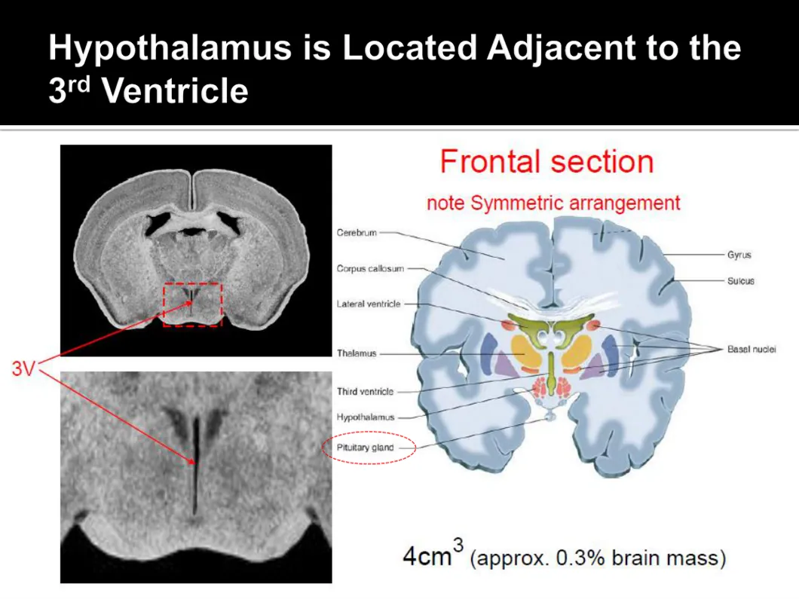
Slide 5 · A nucleus is a team of neurons, not a cell nucleus
In the brain, a nucleus is a cluster of functionally related neuronal cell bodies. A single hypothalamic nucleus can contain different neuronal populations; the borders between nuclei may be indistinct. Some contain neuroendocrine neurons that communicate with the pituitary.
Para = beside the ventricle. The slide distinguishes PVN from the separate periventricular nucleus (PeVN).
Supra = above the optic region. SON is one of the magnocellular hormone-producing areas in the lecture diagrams.
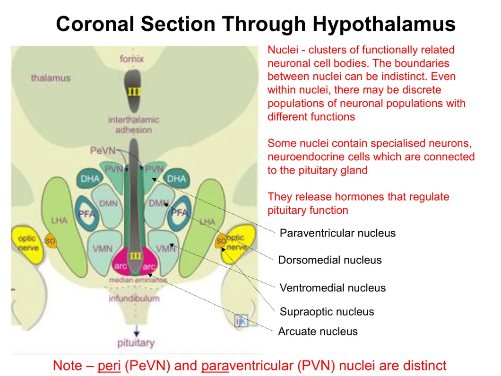
Two routes from brain to gland
Magnocellular vs parvocellular cells and the hormone traffic map
Slide 6 · Neuroendocrine means neuron + endocrine cell
Magnocellular neurons have large cell bodies and long axons travelling to the posterior pituitary. They deliver oxytocin and vasopressin (AVP/ADH). Parvocellular neurons have smaller cell bodies and shorter axons terminating near the upper pituitary stalk; they release TRH, CRH, somatostatin, GHRH, GnRH and dopamine into the hypophyseal portal circulation. Some hypothalamic nuclei contain both types.
An axon is the delivery cable: hypothalamus → posterior pituitary → general circulation.
The axon ends at the upper stalk: factors enter a local blood shortcut → anterior pituitary.
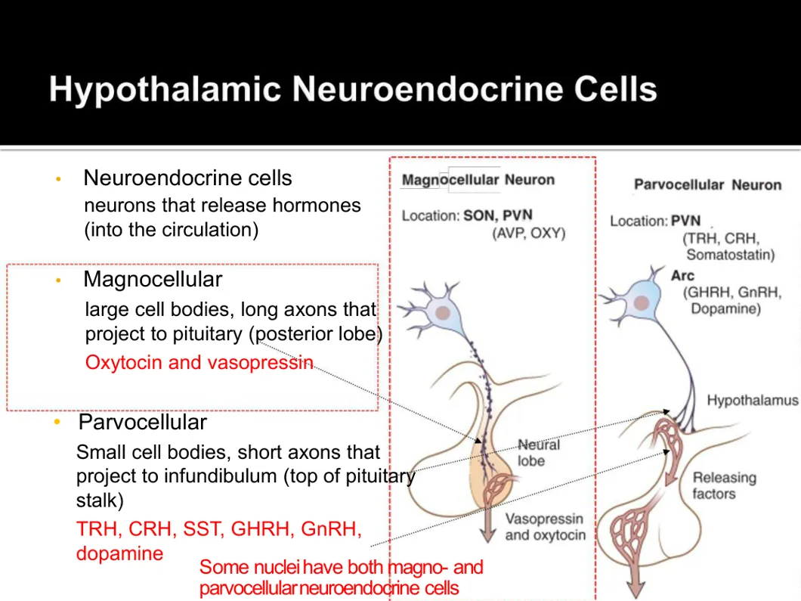
Slides 7–8 · Anatomy explains the different jobs
The pituitary (also called the hypophysis) sits below the hypothalamus. The anterior lobe / adenohypophysis is glandular and receives regulatory hormones via portal blood; the posterior lobe / neurohypophysis is neural and releases hormone delivered along axons from hypothalamic cell bodies. The optic chiasm is just above the gland.
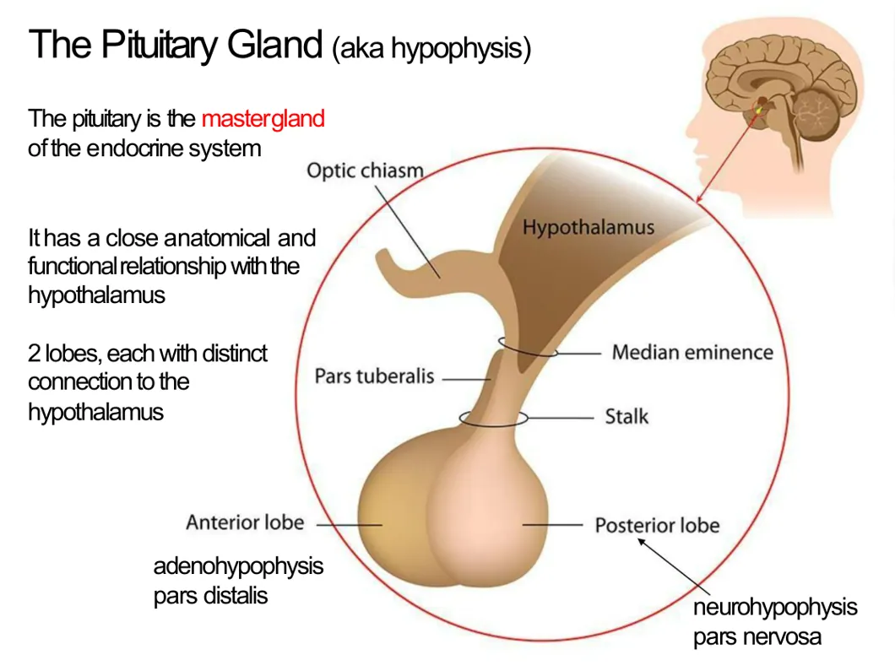
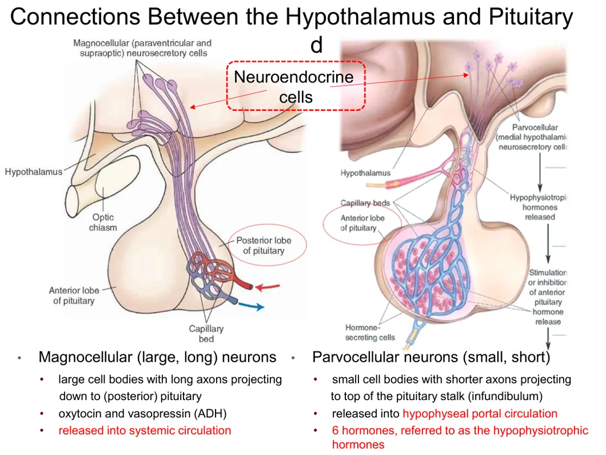
Slide 9 · The six controllers and the two posterior hormones
The six hypophysiotrophic factors control anterior pituitary hormone release. The table below follows the slide’s division: AVP and oxytocin instead belong to the posterior pituitary pathway.
| Hypothalamic signal | Anterior pituitary effect | Name clue |
|---|---|---|
| TRH | ↑ TSH | Thyro = thyroid |
| CRH | ↑ ACTH | Cortico = adrenal cortex |
| Somatostatin (SST) | ↓ GH | Statin = holding / stopping |
| GHRH | ↑ GH | Growth-hormone releasing |
| GnRH | ↑ FSH and LH | Gonado = gonads |
| Dopamine | ↓ Prolactin | The prolactin brake |
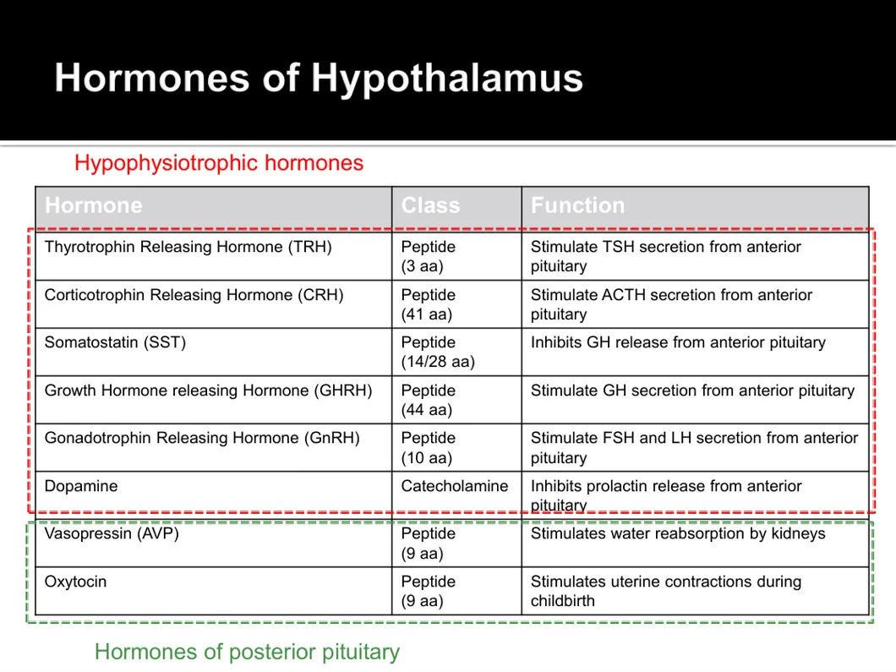
A pituitary built from two origins
Neural tissue, embryology, glia and microscopic hormone storage
Slides 10–11 · Why the back of the pituitary looks like brain tissue
Slide 10 starts the posterior pituitary section. Slide 11 shows the neurohypophysis developing from neuroectoderm extending down from the brain, while Rathke’s pouch (oral ectoderm) develops into the adenohypophysis. The posterior lobe is therefore a neural continuation of the hypothalamus, not a second independent gland.
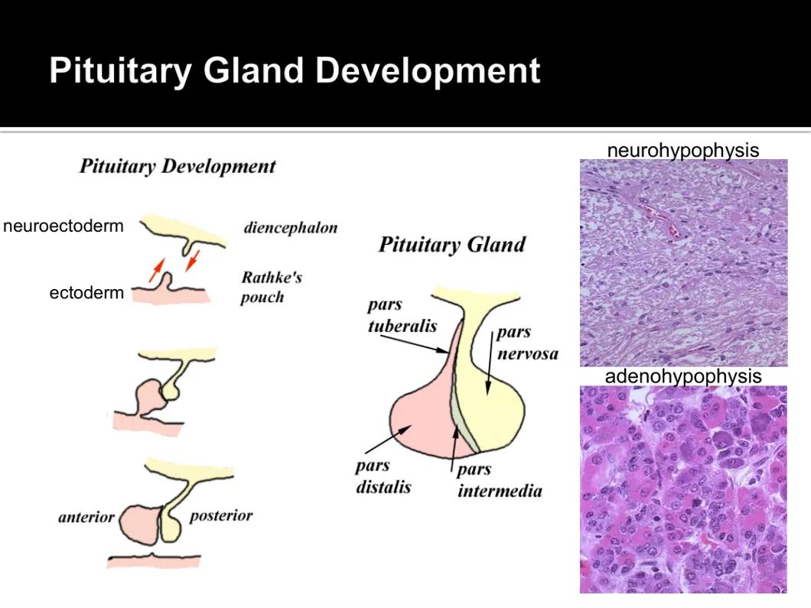
Slide 12 · Posterior pituitary histology: fibres, helpers and packed parcels
Three visual clues identify posterior pituitary tissue: unmyelinated axons from hypothalamic neurons, supporting pituicytes (glial cells), and Herring bodies—local swellings in axons containing secretory granules with oxytocin or vasopressin.
The -cyte ending means “cell”; these are glial cells of the posterior pituitary.
Picture a delivery van swelling with parcels: hormone-filled granules accumulate in axonal dilations before release near capillaries.
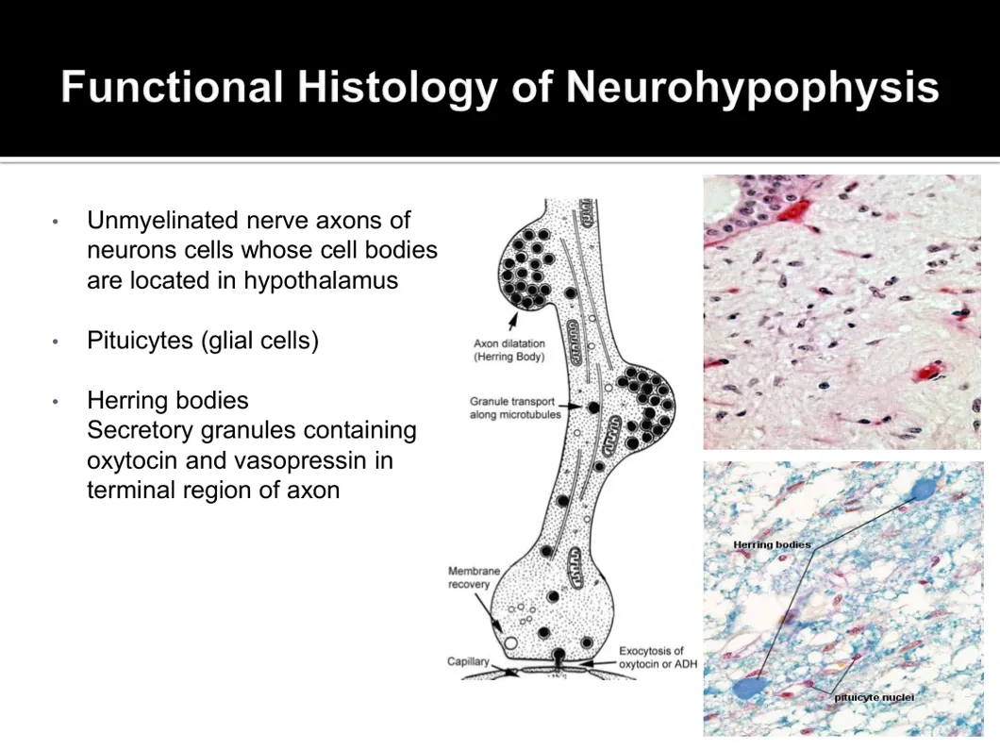
Slide 13 · Colour-code the neurons
The fluorescent image labels oxytocin in red and vasopressin in green in hypothalamic regions around the third ventricle (3V), PVN and SON. The image helps place the hormone-producing neurons in the brain rather than imagining they originate in the posterior pituitary.
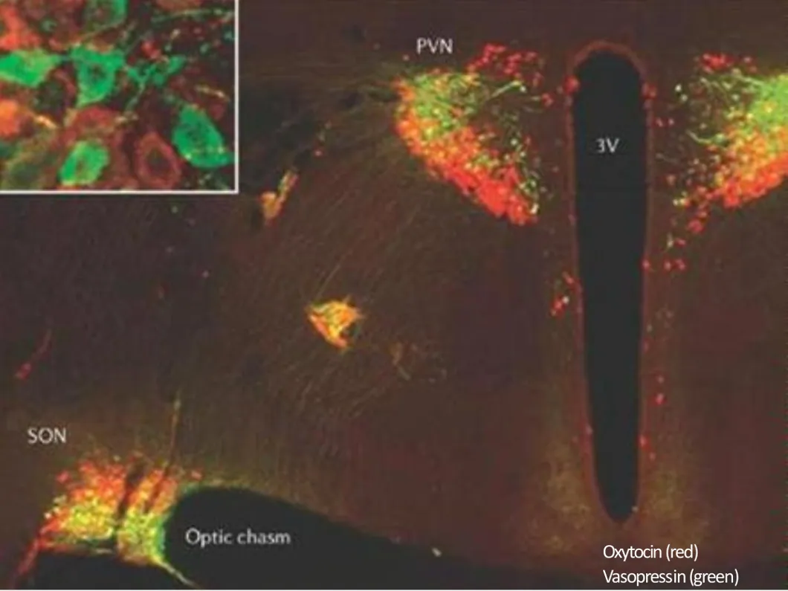
Vasopressin: the water-saving switch
Receptors, osmosis, release triggers and aquaporin-2
Slide 14 · One molecule, two different receptors
Vasopressin (AVP) is also called antidiuretic hormone (ADH). V1 receptors are abundant in vascular smooth muscle: receptor activation causes contraction. V2 receptors are abundant in kidney tubule epithelial cells: receptor activation promotes water reabsorption.
V1 → vascular smooth muscle contraction. “Vaso-pressin” links vessel action with its name.
V2 → renal water retention. “Anti-diuretic” = against making large amounts of urine.
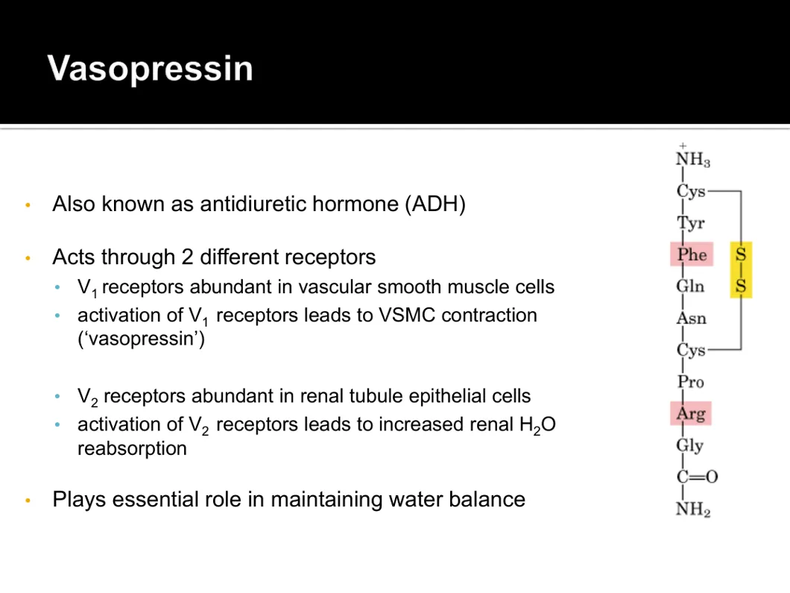
Slides 15–16 · Why the brain cares about water
The lecture estimates that water makes up about 50–60% of body weight. Body water determines plasma osmolality and therefore water movement across selectively permeable membranes. Osmosis is water moving across such a barrier; the diagrams show cells in isotonic, hypertonic and hypotonic surroundings.
Water leaves the cell → cell shrinks.
Water enters the cell → cell swells. Isotonic: no net volume change.
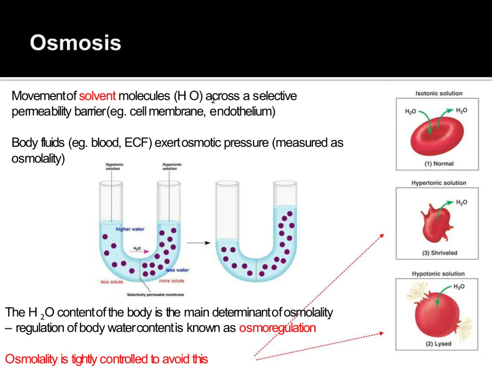
Slide 17 · A feedback loop, not just a hormone level
The lecture’s graph shows AVP rising as plasma osmolality increases; it highlights a value of >280 mOsm/kg as a stimulus. AVP increases kidney water reabsorption, decreasing urine volume and increasing urine concentration; retained water helps lower plasma osmolality. Hypothalamic thirst centres also promote drinking.
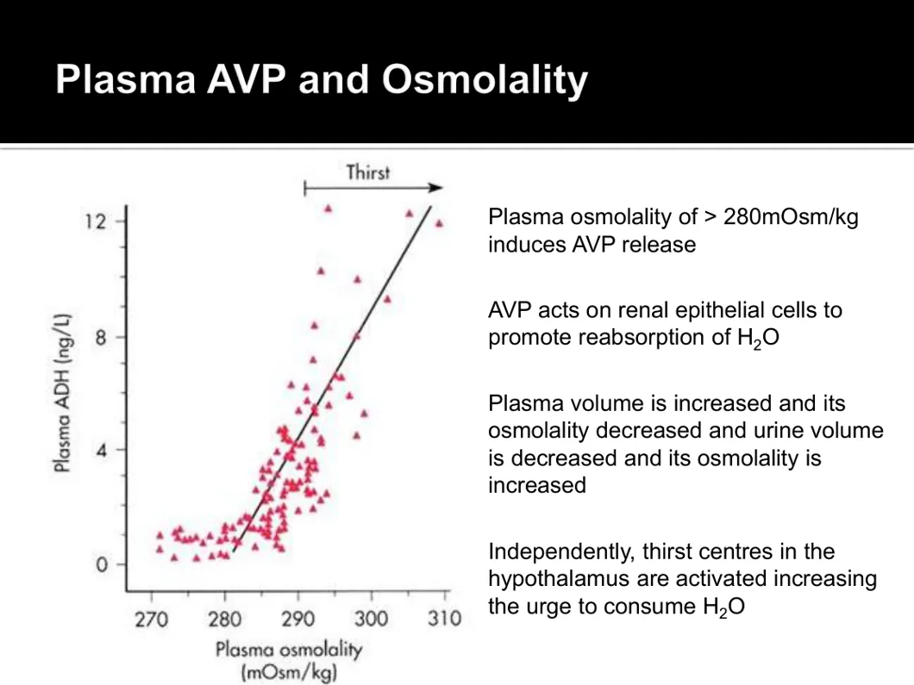
Slide 18 · Three roads to AVP release
The lecture lists higher plasma osmolality sensed by hypothalamic osmoreceptors, hypovolemia sensed through lower atrial stretch, and hypotension sensed through carotid/aortic baroreceptors. Different sensors converge on hypothalamic AVP-producing neurons.
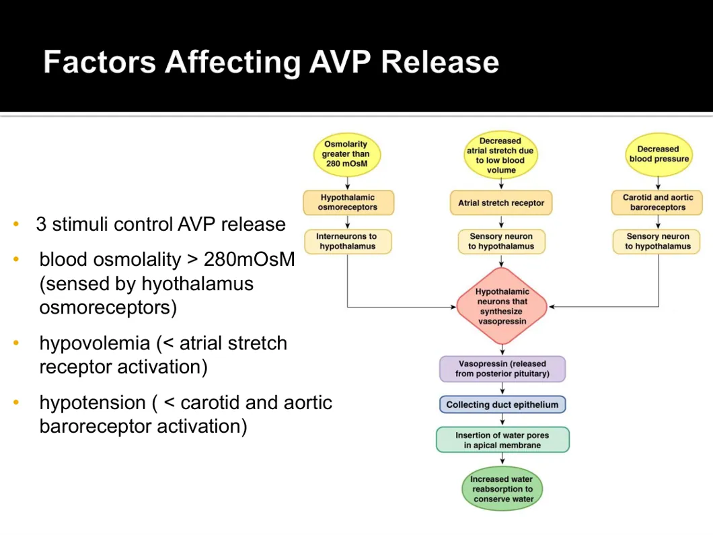
Slide 19 · How V2 makes the kidney a water-saving filter
Follow the numbered collecting-duct diagram: AVP binds V2 on the epithelial cell → a cAMP second-messenger signal activates → vesicles insert aquaporin-2 (AQP2) water pores into the apical membrane → water enters the cell from tubular fluid and returns toward blood down the osmotic gradient.
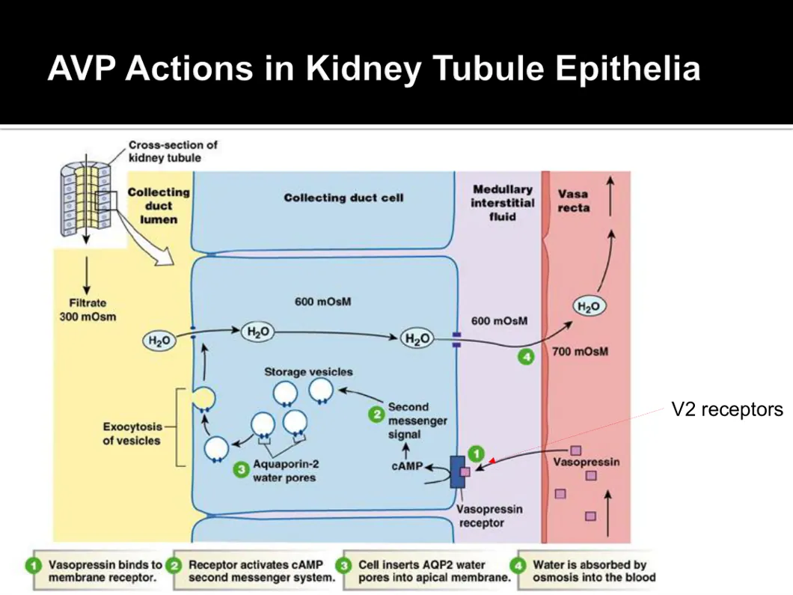
When water balance goes off-script
Diabetes insipidus, water-deprivation testing and SIADH
Slide 20 · Diabetes insipidus: too much dilute urine
In diabetes insipidus (DI), the kidney fails to conserve enough water, producing large volumes of dilute urine (the slide gives an extreme example of 25 L/day). Central / cranial DI involves inadequate AVP release due to a hypothalamic/pituitary problem; nephrogenic DI means the kidney does not respond adequately to AVP.
Not enough usable AVP arrives from the hypothalamus/posterior pituitary route.
AVP is present but renal response is deficient; the lecture mentions V2 receptor / AQP2 mutations and some drug causes.
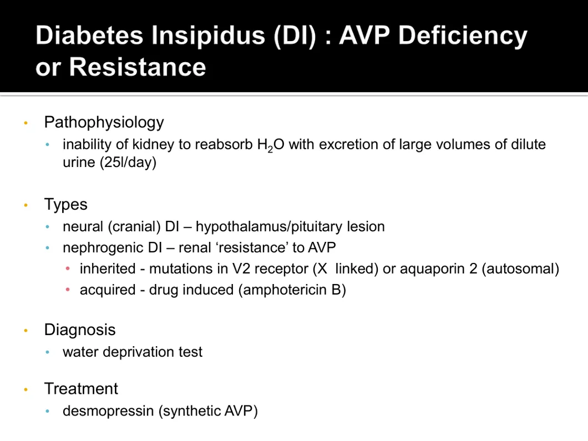
Slide 21 · Water deprivation asks two separate questions
The slide’s supervised water-deprivation graph compares urine osmolality during dehydration, then after desmopressin (an AVP analogue). Normally urine becomes concentrated during dehydration. In central DI, desmopressin can increase urine osmolality because it supplies the missing AVP signal. In nephrogenic DI, the response remains limited because kidney responsiveness is impaired. Partial forms show intermediate responses.
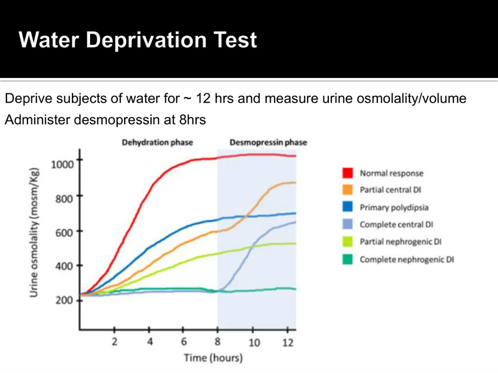
The water-deprivation test is a medically supervised diagnostic procedure; the lecture graph is an explanation, not an instruction to perform a test yourself.
Slide 22 · SIADH: water is retained when it should not be
SIADH is inappropriate antidiuretic hormone secretion despite normal or increased plasma volume. Continued renal water reabsorption lowers plasma osmolality and can cause hyponatremia (low sodium concentration). The lecture warns that marked reductions in sodium/osmolality can produce brain swelling. It mentions ectopic ADH production by some tumours and a water-loading test as related clinical concepts.
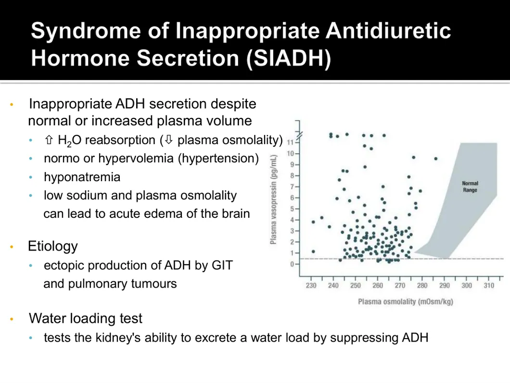
The vole story: receptors and behaviour
What an animal experiment can—and cannot—tell us
Slide 23 · Same hormone, different receptor map
The lecture compares receptor expression in the brains of prairie voles and meadow voles. It highlights the ventral pallidum, a brain region associated with reward, motivation and bonding. The slide links species differences in vasopressin-receptor patterns to differing partner-preference behaviour.
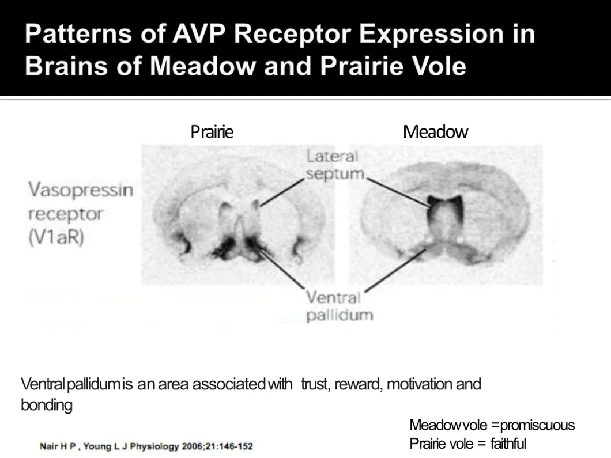
Slide 24 · Change one receptor map and observe a behaviour change
The lecture cites a 2004 Nature study in which increasing vasopressin V1a-receptor expression in the ventral pallidum of male meadow voles was associated with increased partner preference compared with controls. The experiment illustrates that where a hormone’s receptor is expressed matters, not just how much hormone is in circulation.
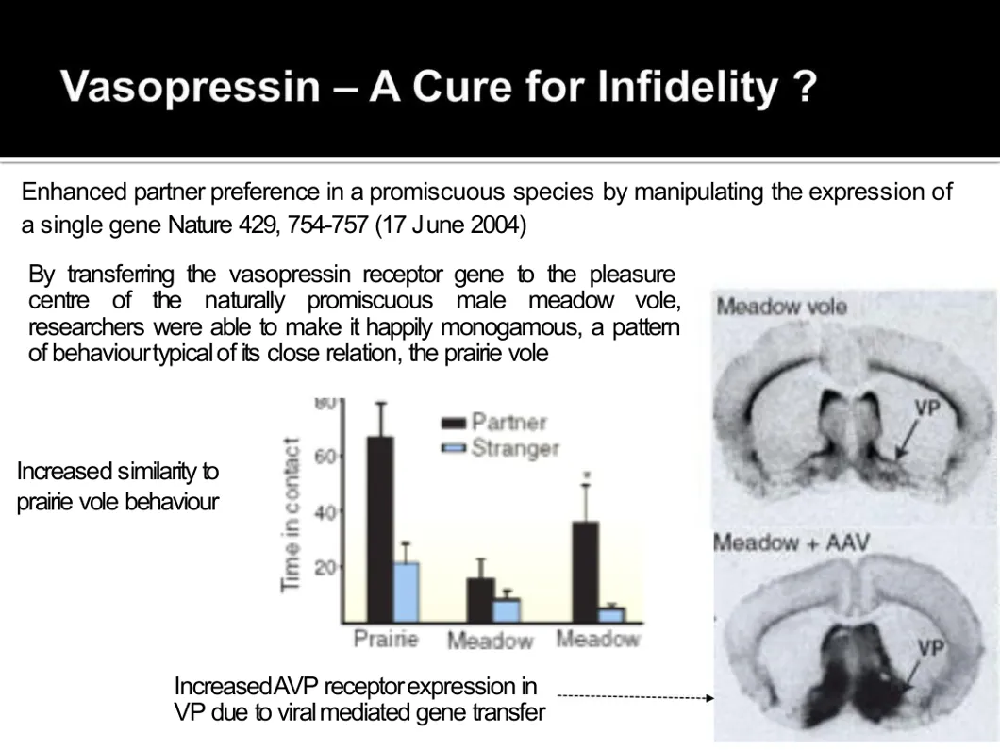
Oxytocin: squeeze, release and repeat
Labour, milk let-down and the limits of the “cuddle chemical” label
Slide 25 · A close chemical cousin of AVP
Oxytocin is structurally similar to AVP; both are 9-amino-acid peptide hormones in the lecture. Oxytocin’s main physiological roles here are parturition (childbirth), lactation and some social/mating/emotional behaviour. The slide notes weak antidiuretic action related to its structural similarity to AVP.
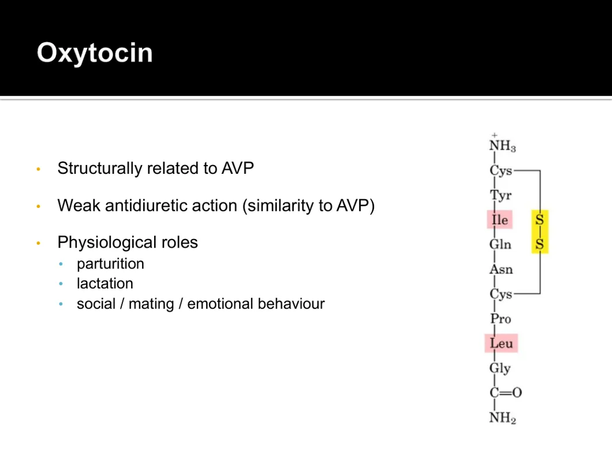
Slide 26 · Milk production ≠ milk ejection
During suckling, nipple mechanoreceptors send signals to the hypothalamus, triggering posterior pituitary oxytocin release. Oxytocin contracts the myoepithelial cells around breast alveoli, pushing milk into the ducts: the milk let-down reflex. Oxytocin also stimulates uterine contractions during labour and may be administered clinically to induce labour.
Makes the milk. Dopamine inhibits prolactin release; suckling can remove that brake.
Moves the milk. It contracts myoepithelial “squeeze cells” around alveoli.
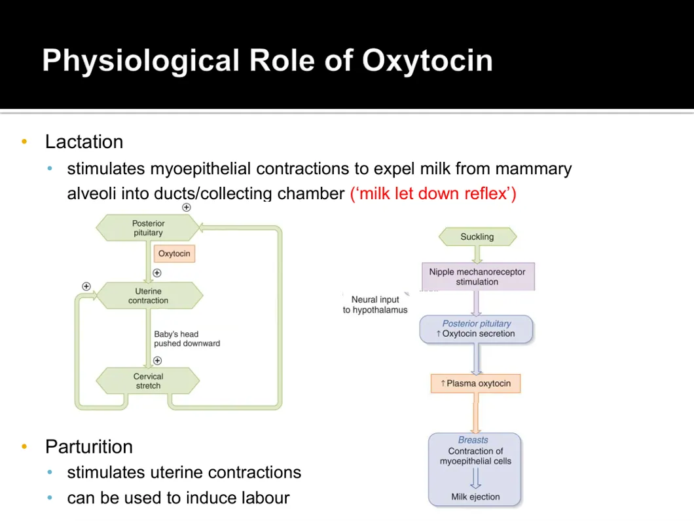
Slide 26 · Childbirth as positive feedback
The lecture’s diagram shows the fetus pressing against the cervix → cervical stretch stimulates oxytocin release → stronger uterine contractions push the baby downward → more cervical stretch. This is a positive-feedback loop that intensifies during labour.
Slide 27 · “Cuddle chemical” is a nickname, not a complete mechanism
The slide describes research-interest links between oxytocin and bonding, trust, anxiety and social behaviour. Those effects are context-dependent and more complex than a universal “trust hormone” response. For this lecture, prioritise the strongly established physiological mechanisms: uterine contraction and milk ejection.
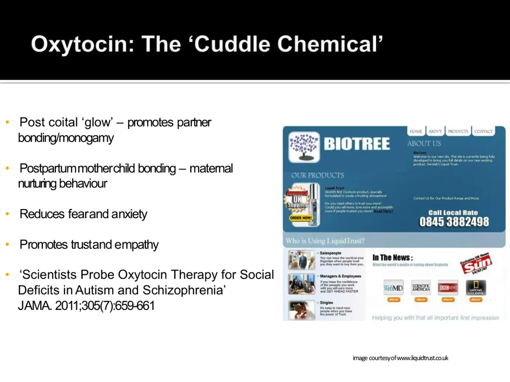
Complete, compact cheat sheet
All major mechanisms and contrasts from this lecture, without losing the detail that gets tested.
Cover the end of every arrow sequence and reconstruct it aloud. Your annotated PDF includes the original lecture images and memory links.
01 · Map the brain · 3–5
Hypothalamus = neural + endocrine interface; integrates CNS/PNS/endocrine inputs; ANS output plus pituitary-mediated endocrine output. On either side of 3rd ventricle beneath thalamus. Nucleus = cluster of functionally related neuronal bodies; PVN ≠ PeVN; SON supraoptic; ARC arcuate. Functions: growth, reproduction, osmoregulation, temperature/metabolism, energy, stress, lactation.
02 · Two secretory routes · 6–8
Magno: large cell body / long axon → posterior pituitary → systemic blood → AVP + oxytocin. Parvo: smaller / short axon → median eminence / upper stalk → portal veins → anterior pituitary regulation. Adenohypophysis = glandular anterior; neurohypophysis = neural posterior. Posterior releases hormones made by hypothalamic neurons.
03 · All 8 hypothalamic signals · 9
Anterior: TRH → ↑ TSH; CRH → ↑ ACTH; GHRH → ↑ GH; SST → ↓ GH; GnRH → ↑ FSH/LH; dopamine → ↓ prolactin. Posterior: AVP/ADH → kidney H₂O conservation (also V1 vascular effect); oxytocin → uterine contraction and milk ejection. Slide 9 gives peptide lengths: TRH 3 aa, CRH 41, SST 14/28, GHRH 44, GnRH 10, AVP and oxytocin 9; dopamine is a catecholamine.
04 · Embryology / histology · 10–13
Oral ectoderm / Rathke’s pouch → anterior; neuroectoderm / infundibulum → posterior. Posterior histology: unmyelinated axons from hypothalamus, glial pituicytes, Herring bodies = axonal secretory-granule accumulations. Fluorescence slide 13: oxytocin red, vasopressin green in PVN/SON.
05 · AVP and water homeostasis · 14–18
V1 vascular smooth-muscle contraction; V2 kidney epithelial H₂O reabsorption. H₂O ~50–60% body mass. Osmosis = H₂O movement across selective membrane; hypertonic outside → cell shrink, hypotonic → swell. Lecture graph: ↑ osmolality (>280 mOsm/kg cited) → ↑ AVP and thirst; other stimuli: ↓ atrial stretch (hypovolemia), ↓ carotid/aortic baroreceptor firing (hypotension). AVP → ↓ urine volume / ↑ urine osmolality; reabsorbed H₂O → ↓ plasma osmolality.
06 · The collecting-duct mechanism · 19
AVP → basolateral V2 receptor → cAMP signal → AQP2 vesicles insert channels into apical membrane → H₂O enters collecting-duct cells down osmotic gradient → H₂O returns to blood. AQP2 = aquaporin-2 water pore; the name literally describes the mechanism.
07 · Too little vs too much action · 20–22
Central DI: inadequate AVP output (hypothalamus/pituitary) → lots of dilute urine; desmopressin generally raises urine concentration. Nephrogenic DI: renal resistance (V2/AQP2 mutations; some acquired causes) → limited desmopressin response. Water-deprivation test: supervised assessment of urine concentration before/after desmopressin. SIADH: inappropriate ADH → water retention → ↓ plasma osmolality, hyponatremia, risk of cerebral edema; tumour-related ectopic ADH is one cause in slide.
08 · Receptors and reproductive physiology · 23–27
Prairie/meadow vole comparisons: different V1a receptor brain distribution; experimental V1a expression in meadow vole ventral pallidum ↑ partner preference (animal research, not proof of human “faithfulness”). Oxytocin: 9-aa peptide related to AVP. Suckling → posterior oxytocin → myoepithelial contraction → milk ejection. Contrast anterior prolactin → milk synthesis. Labour: cervical stretch → oxytocin → uterine contractions → more stretch (positive feedback). Social effects are complex/context-dependent.
Flip to remember
Try giving both the definition and the name/story connection.
Can you trace the mechanism?
16 lecture-based questions with instant explanations after you submit.
Download & revisit
Keep the original slides next to your illustrated notes for slide-number checking.
Prolactin vs oxytocin
This lecture’s posterior oxytocin ejects milk; your anterior pituitary lecture explains why prolactin produces it. Both lectures live in the Endocrine Biology module.
Open anterior pituitary lecture ↗